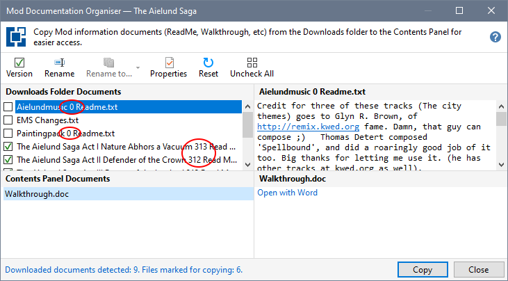
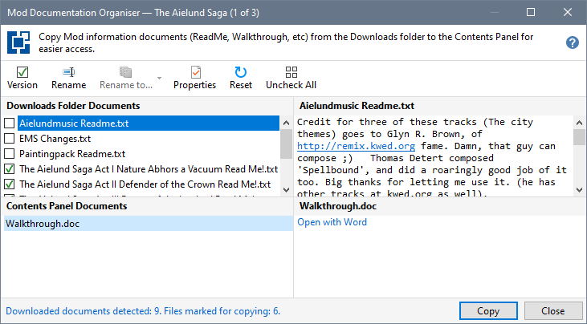

The Documentation Organiser ensures all document names are unique by using the compressed file or Mod folder name as a prefix and, if necessary, appending a sequence number. This helps to deal with multiple ReadMe or Walk-through files.
Click Version to remove the numeric version number of portion from all generated names.

Each time you click Version, any name changes you made to documents originally containing a version number are discarded. For this reason, you should finalise whether to include or exclude version numbers before making any other changes.
The version number portion of generated names is removed. Clicking Version again restores the removed version numbers.

Remove version number from document names
Rename a document using a Contents Panel name